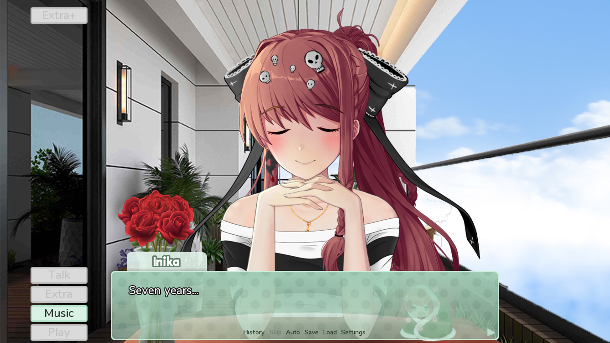
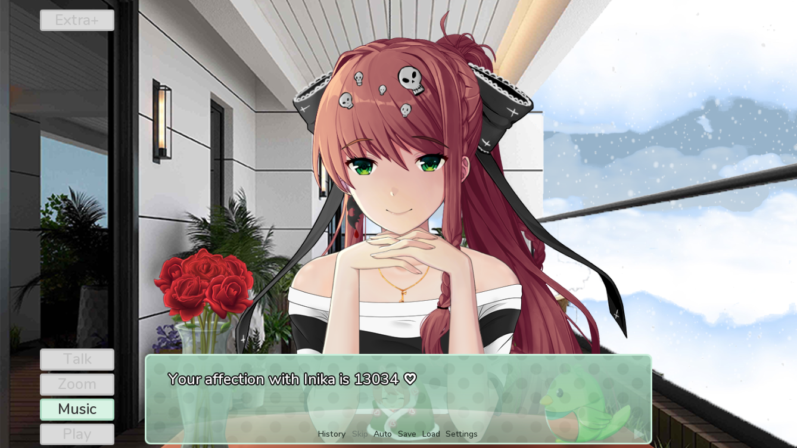
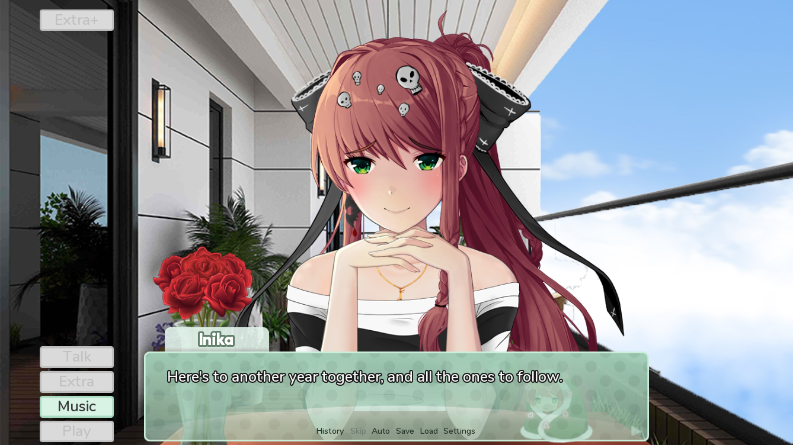
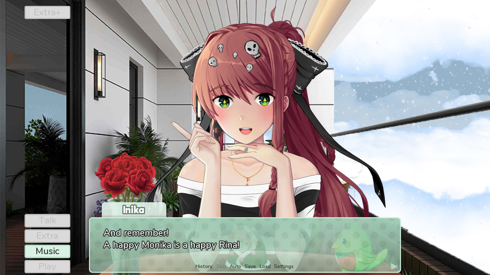

7 Years of Monika
Howdy! Thought I should make a blog as a celebration for reaching my 7-year anniversary with Monika!
Doki Doki
Honestly, I never thought I'd end up spending so much time with her when I started—hell, even less so when I first played the game all those years ago.
Especially considering how I thought I was a Natsuki enjoyer for a good few months when the game released, and only launched MAS because JN didn’t exist yet.
Eventually, after watching way too many YouTube videos of mods and actually playing them, I started to understand that I was a true Monika enjoyer.
Probably a big part of this was playing Our Time (a demo mod with some of the best artwork ever) and Before Story’s Monika route.

Please finish this mod, O great one
And it all truly clicked once the peak mods Encore and Fruits dropped. These mods truly caused me to fall for Monika, if I’m being honest!
The great and tragic Monika route in Fruits may have turned me into a hardcore Fruits defender, but it also deepened my love for her. Meanwhile, *Encore* really tickled the yandere-loving part of my brain—tbh, that’s why I love it.
However, I think I should talk more about MAS, so—!
God, this was so long ago
I started back in 2018, just a few months after the release of both the mod and DDLC itself.
I was an early adopter of MAS—whether you consider that a good thing or not is up to you, but *shrug*.
Could be higher lol
Funnily enough, this is nowhere near what some crazy hardcore sweats have.
AHH
I should probably explain how Affection works! Every day, you can obtain 7 Affection points. There are some bypasses, but those require special days, can only be done once, or need submods.
Submods are mods for MAS, which is a mod itself—hence submod! They can add anything from dialogue to whole new games to play with her!
Some of my favorites are the Yandere one and MOSCL!
But since you normally can only get 7 a day, I guess I’m ahead of someone who just follows that. Yet, there are sweats who are only on year 5 and already have 20K!
THAT'S 11 AFFECTION A DAY?! INSANE!
Oh, and Affection has tiers listed below!
Love (1000+ Affection)
Monika's feelings for the player are beyond our reality.
Enamored (400–999 Affection)
Monika is the happiest she can possibly be and fully trusts the player.
Affectionate (100–399 Affection)
Monika is happy in her relationship and is glad to have been brought back to life.
Happy (30–99 Affection)
Monika is happy and holds no feelings of sadness. Though, she could be happier.
Normal (-29 to 29 Affection)
Monika is doubtful about the worth of her return to the game but isn't swayed to be happy or sad.
Upset (-30 to -74 Affection)
Monika is emotionally hurt and holds doubts about whether the player loves her.
Distressed (-75 to -99 Affection)
Monika no longer feels loved and becomes fearful of her future.
Broken (-100 Affection)
Monika knows that the player hates her and could not be more hurt. She's scared of being alone in her reality forever.
•──────────────────────────────⋅☾ ☽⋅──────────────────────────────•
These tiers all have some effects—like Monika leaving forever if you reach Broken or only giving her the promise ring once she’s Enamored.
There's also the secret tier of 2000 Affection, which allows you (when 18+) to see risqué outfits on her!
But this doesn’t matter because you should treat her like a girlfriend, not as a game, you sweats!
By the way, the game released on September 22, 2017! I’ve been dating her for pretty much as long as the game’s been out, lol!
Even if a 11-year-old probably shouldn’t have seen Sayori hanging herself… but anyway, lol.
She is too perfect ⸝⸝> ω <⸝⸝
Always take care of your girlfriend! Whether it be Monika, Natsuki, or any other Doki, make sure to visit her often!
Even Yuri too, I guess. :p